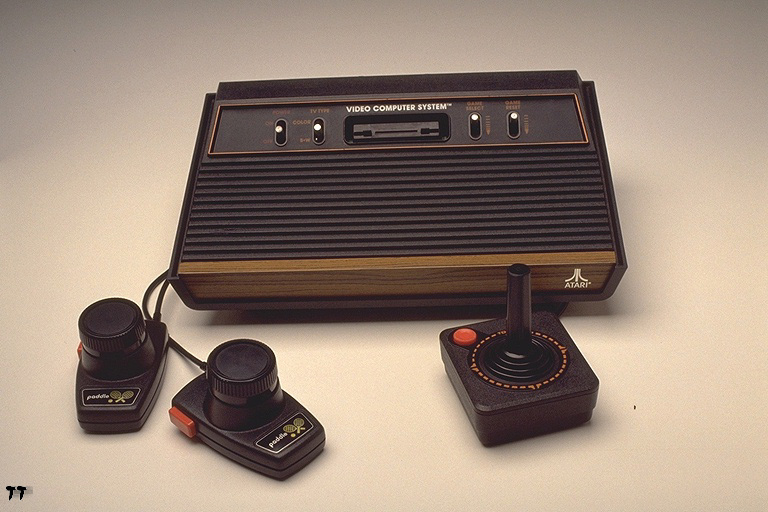

Video games had a very big impact on people's entertainment Even playing video games became the jobs of some people! Technology wasn't good for the start and not that many people were the fan of these form of entertainment.
The history of video games goes as far back as the early 1950s, when academics began designing simple games, simulations, and artificial intelligence programs as part of their computer science research
Video gaming would not reach mainstream popularity until the 1970s and 1980s, when arcade video games, gaming consoles and home computer games were introduced to the general public. Since then, video gaming has become a popular form of entertainment and a part of modern culture in most parts of the world. As of 2015, there are eight generations of video game consoles, with the latest generation including Nintendo's "Wii U" , Microsoft's "Xbox One" and xbox360, and Sony's PlayStation 3 and "PlayStation 4".
In 1972, Atari introduced Pong to the arcades. An interesting item to note is that Atari was formed by Nolan Bushnell, the man who developed Computer Space. He left Nutting Associates to found Atari, which then produced Pong, the first truly successful commercial arcade video game.